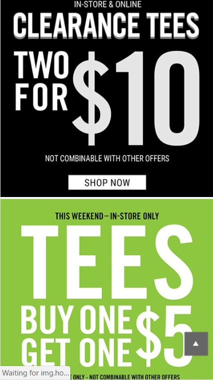
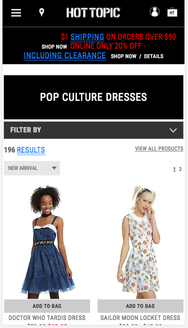
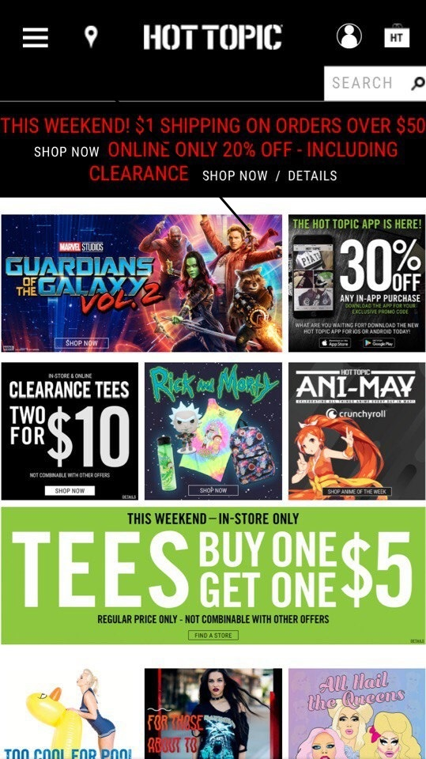
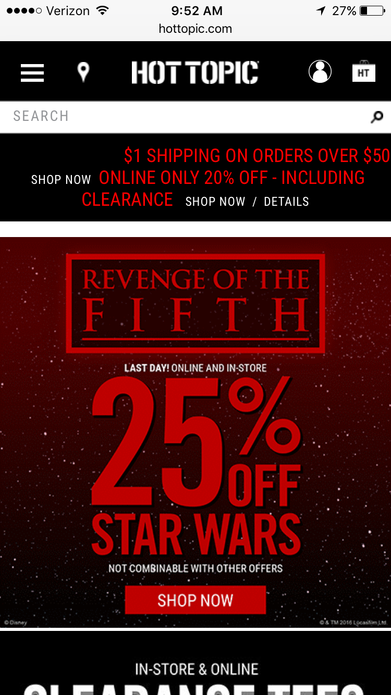
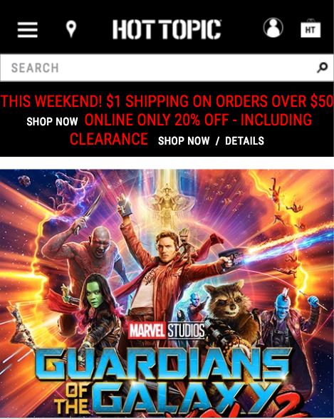
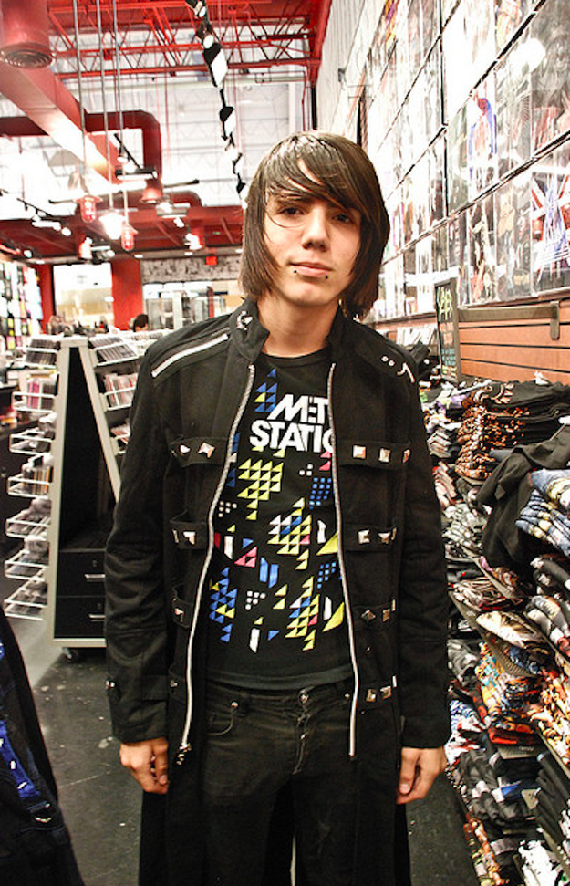

Design - Analysis Assessment
Hot topic
Design Principles
Proximity — Jesse Hillman
Hot topic does a great job at proximity. The more things are related to each other the Closer they are on the web page. As you can see here all of the sales or advertisements Are found in the same area one after the other. As you go farther down the page and farther away from these advertisements you see unrelated elements that are separated by whitespace. For example at the bottom there are customer service tabs, and fanpics. Not only do they use whitespace to properly execute proximity design principles but they also use a grid to separate new ideas. All in all Hot topic follows the principle of proximity.
Alignment — Peeraya
Hot topic is one of the website that provides a good design for alignment. As we see on the navigation bar, there is a rectangle bar that matches we the one below. The first time I look at this website my eyes focus on the top of the page which provide the information for the page. After that my eyes scroll down, and I can see the dresses that are provided. The dresses are provided side by side. There is also space between the two dresses. I really like that part because my eyes tend to follow down through the space between and it’s easier for me to look at the site.
Repetition — Katya
Repetition is one of the most common visual effects on Hot Topic’s web site. The repetitive phrase “Shop Now” is appearing under each advertisement picture on the site. This effect emphasizes the purpose of the web site to sell variety of products. Another interesting fact is the choice of font and colors for this “Shop Now” button. It is in small neutral white color that doesn’t make a viewer annoyed by this repetition. But it still provides a perfect reminder that the main reason of visiting this site is shopping.
Contrast — Brandy
Hot Topic's home page utilizes an effective use of contrast through size, color, and movement. First, is movement. There is a flashing text that informs us that today there is a sale. It is moving/flashing, so catches the viewer's eye first. Then is the 25% off on the first big image. This text is the biggest on the page, and therefore where the eye travels to next. And finally, the color contrast is in the bright, saturated red text in both of the before listed elements. Both texts are contrasted by the black background behind them.
Typography — Maxwell
Since Hot Topic started out as mainly a rock band music website, it has a gothic font style for its title “Hot Topic”. The rock bandish theme influences the colors of the website because it mainly uses black background and with its main logo in white and some texts in red. This eases the eye in reading the texts on the website. Aside from their main logos and titles, the other texts on the website varies because the Hot Topic has spread into more entertainment sectors of movies, music and pop culture in general. Therefore, they tend to use the original font style of the product they are advertising or that is on their site. You may find varying font styles throughout the site.
Site Purpose Statement
Company: To make money and to inform people on latest trends. Customer: To buy latest rock band merchandise and other entertainment merchandise.
Target Audience
- Age: 12-55
- Occupation:Students, Professional workers, and unemployed
- Income: 0$-$75,000
- Other: People who like entertainment and rock music.
Persona
- Name: Scott X. Strummer
- 
- Occupation:High School student, also in a band “Revenge of the Fifth”
- Primary Device:Cell Phone
- Quote: ”I like using Hot Topic mobile because it keeps me updated on my favorite bands’ merch and browse for cool stuff while I’m bored in class”